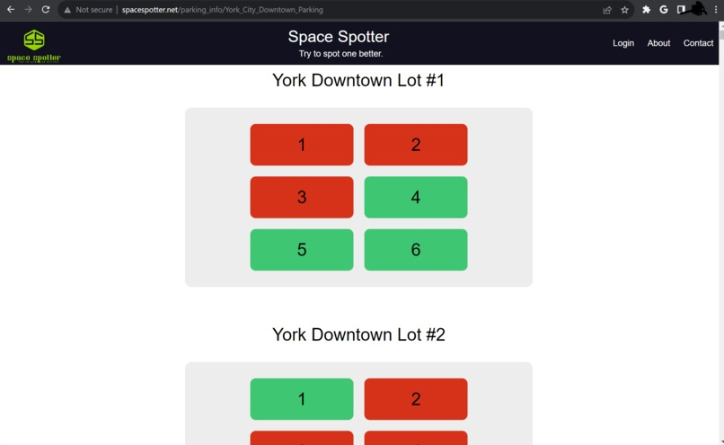
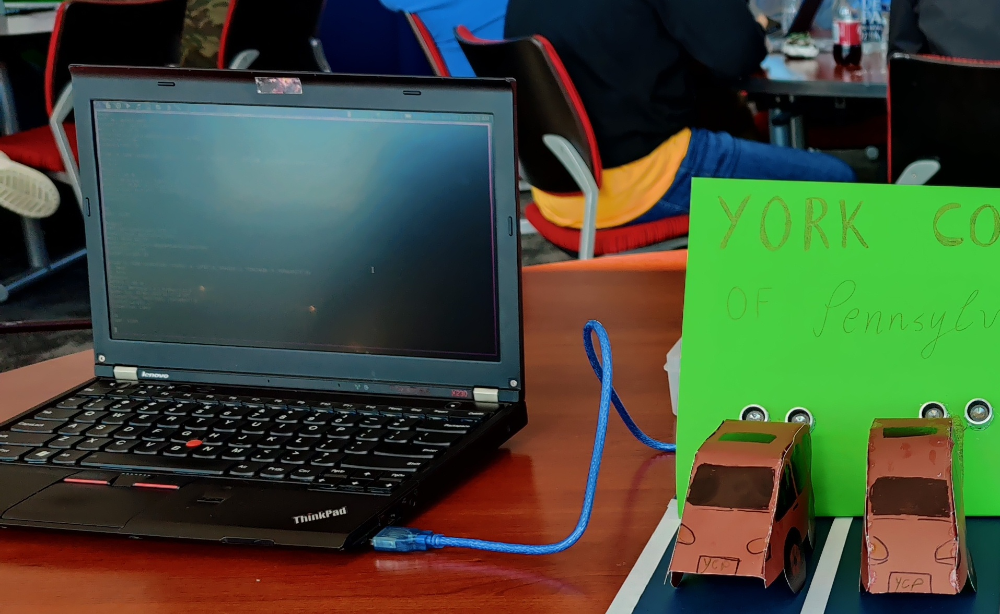

About
Spearheaded delelopment and implementation of a full-stack, automatic parking lot hardware sensor, api, and website in a three day sprint with a team of developers. The result was a first-place winning in "Accessablility Services", which was sponsored by the investment firm Fidelity during the YCPHACKS2023 Hackathon (11/3/23 - 11/5/2023).
I Personally designed and integrated the control software, which communicated information and updates from the hardware to our custom api.
The Pitch
Finding a parking space can be a hassle, especially when the place you are trying to park is busy. This was the exact problem that some of our group members experienced the night of the hackathon. What if you could see exactly which parking spaces were open or taken from your phone? What if your map app of choice automatically routed you to an available parking space?
Our Solution
We decided that the best to see a live parking lot digitally would be to create a full stack web api that communicates with hardware sensors sitting in the parking lot. The most efficient way to do this would be to use simple hardware sensors in each space that sent updates to a central control board, which in turn compiled all of the data and sent updates to a remote web server. This setup abstracts each step of the process into three "layers".
| Webserver / API |
Recieves updates from the control software (parking lot), updates the database and website accordingly. |
| Control Software |
Recieves updates from an array of hardware sensors, organizes the data and sends updates as a packet to the webserver. |
| Hardware Sensors |
Detects changes in an individual parking space's state and sends updates to the control software. |
Webserver and API

API demo showing the live status of a virtual parking lot
Of course, this simple web page could be modified to visually resemble any real parking lot. We wanted to create an admin panel that would allow any institution that utilizes our service to to just that, however we only had time for this simple demo. This site shows which lots are available (green) and which are taken. It gets this information from the database, which is periodicaly updated when pinged by the control software.
You can view the webserver code here.
Control Software
In a real world application, information from the physical parking lot needs to be sent to a remote server. Our hardware design consists of an array of sensors all connected to one central device. This 'motherboard' should ping the webserver with updates. I wrote the software that would hypothetically run on this device. In our case, it ran on my laptop. I created two versions of this software. A real, physical version that listens for updates from an arduino and pings the webserver, and a second, virtual version. The 'virtual version' pretended to recieve data from a physical device, and sent this data to the server. That is how we were able to simulate larger parking lots above. You can view the source code for the hardware version and the virtual simulation version here.

This is a horrible picture of the 'motherboard' listening for updates from hardware.
Hardware Demo
It's one thing to create a virtual parking lot, and simulate cars parking and pulling out of spaces. However how could we apply this to the real world? By designing sensors for every space, and networking them together to form a 'lot', we would be able to do the exact same thing as our virtual lot except with real automobiles. Whenever a sensor detects a change in the hardware's state, it sends an update to the control software. That's it, that is all the sensors have to worry about.
In a real world application, we discussed implementing several error prevention measures, such as heating to stop snow from triggering a sensor, and mounting the sensors on a lot's curb stop instead of putting them flat on the ground or building poles to attach them to.
Is There a Market for such a Solution?
We believe so. Not only would this benefit the end user as a convenience factor, but imagine what institutions and corporations could do with the data from an application like this. Knowing exactly where most of your customers prefer to park, hence where most people approach the building, would be a dream for advertisers, and help businesses identify potential bottlenecks. Not only that, but mass parking data could be used to train AI algorithms that, for example, could be used to improve self driving cars.